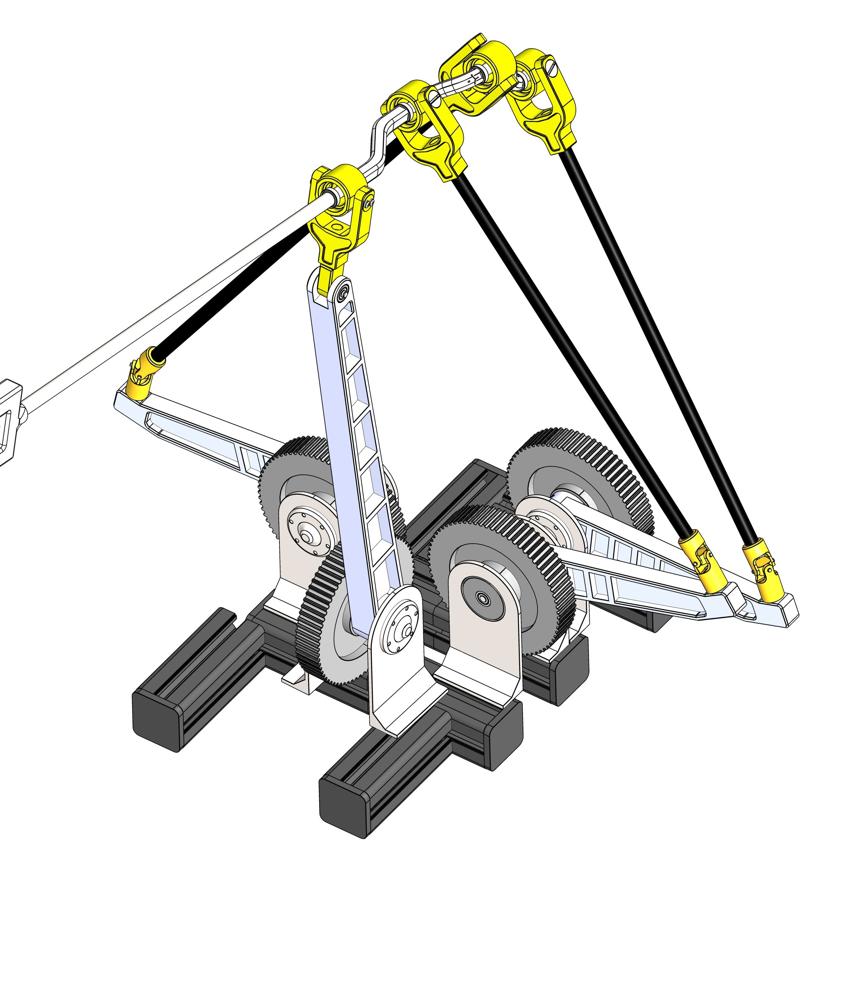
Analysis and Design of a Compact Four-DoF Parallel Robot with Unlimited Rotation
Journal of Mechanisms and Robotics (ASME), 2026

Designing parallel robots with unlimited rotation and integrated grasping
Ph.D. Candidate in Mechanical Engineering · Finishing December 2026
Université Laval · Québec, Canada
Open for Postdoc or R&I positions from December 2026
I design advanced robotic and mechatronic systems grounded in deep mathematical analysis. My work combines screw theory, Lie group methods, and singularity analysis to create parallel robots with unprecedented capabilities. I am currently exploring Physical AI from a mechanical design perspective, and I am also interested in medical robotics, micro-manipulation, and mobile vehicles as a way to extrapolate my expertise to new domains.
Screw theory, Lie group methods, and higher-order mobility analysis for mechanism synthesis and singularity characterization.
Kinematically redundant parallel manipulators with unlimited rotations, reconfigurable platforms, and integrated grasping capabilities.
Exploring Physical AI from a mechanical design perspective, with interest in medical robotics and micro-manipulation applications.
My dissertation establishes a unified framework for designing parallel manipulators that overcome two fundamental limitations: restricted rotational workspace and the inability to grasp objects. Starting from screw-theoretic foundations, I develop novel architectures, from compact 4-DoF wrists to fully redundant (6+1) and (6+2)-DoF systems, that achieve unlimited rotation while integrating grasping directly into the mechanism structure. The work spans analytical singularity characterization, collision-free motion planning, performance index development, and experimental validation through multiple hardware prototypes.

Journal of Mechanisms and Robotics (ASME), 2026
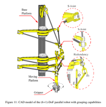
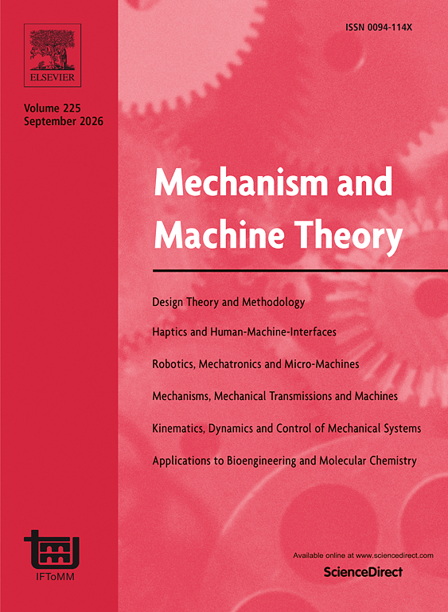
Mechanism and Machine Theory (Elsevier), 2026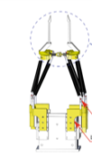
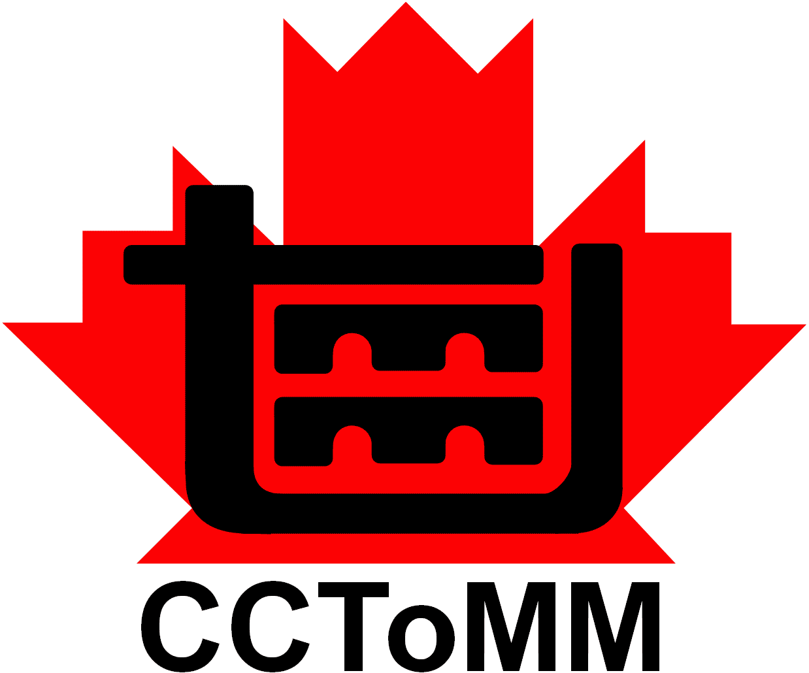
CCToMM M3 Symposium, 2025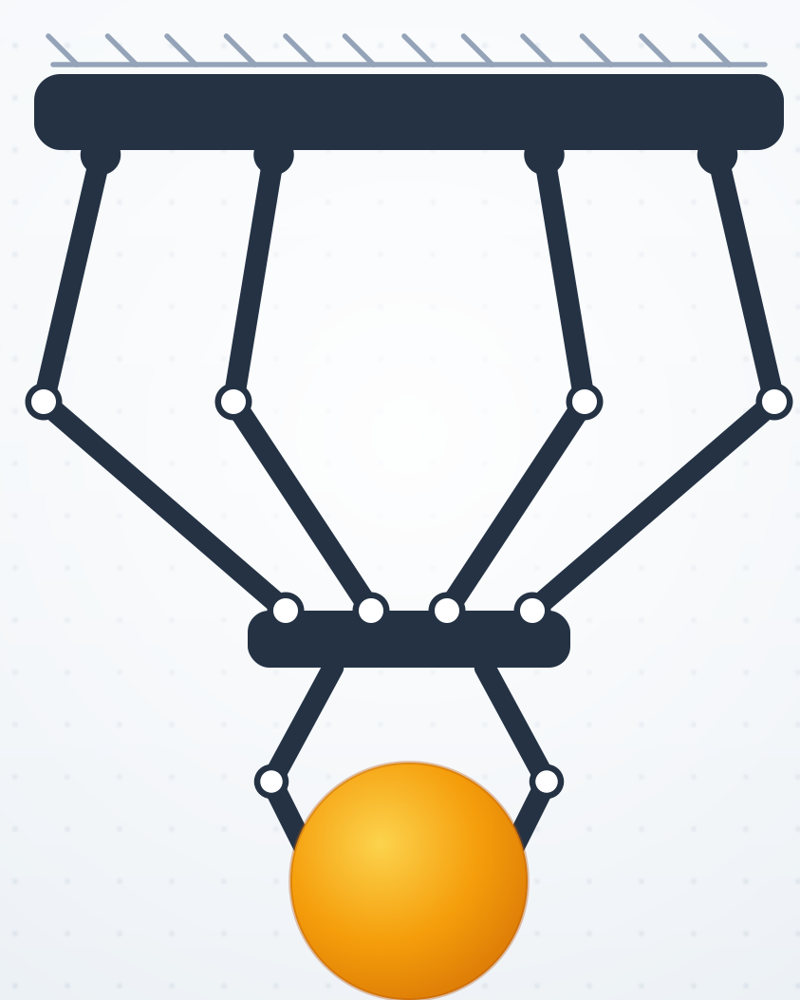
Journal of Mechanisms and Robotics (ASME) — near acceptance
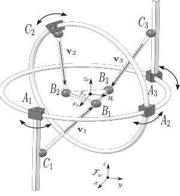
Q1 Robotics Journal
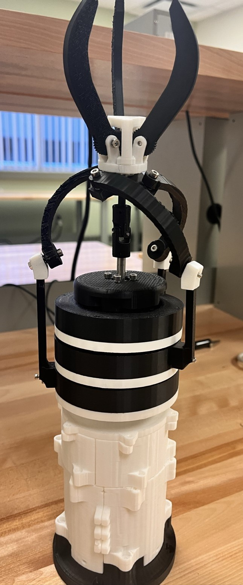
 IEEE Robotics and Automation Letters
IEEE Robotics and Automation Letters
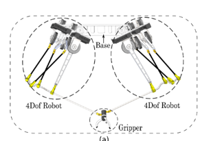
Journal of Mechanisms and Robotics (ASME)

Mechanism and Machine Theory (Elsevier)
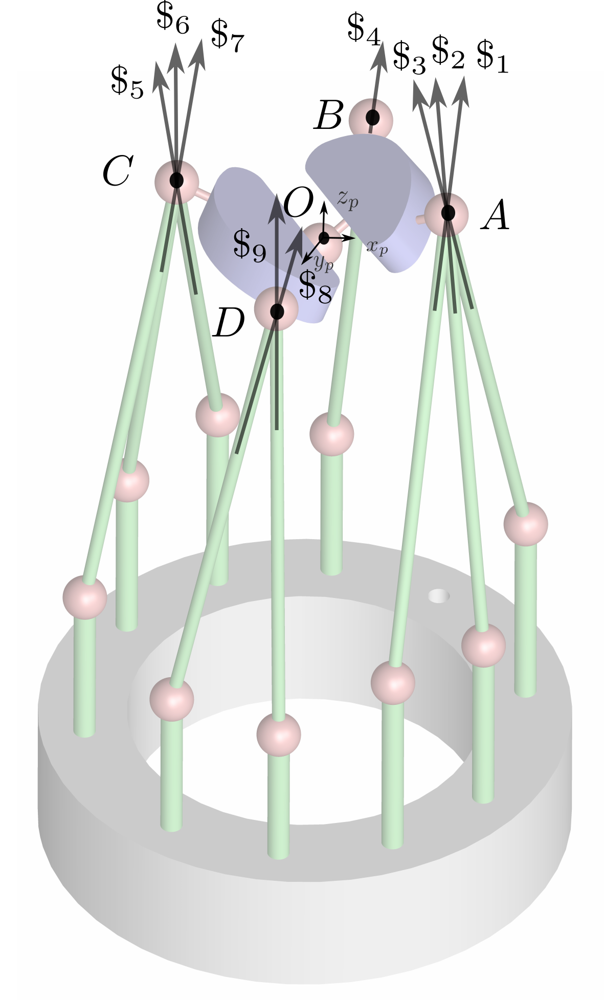
Mechanism and Machine Theory (Elsevier)
Target: IEEE T-RO or IJRR
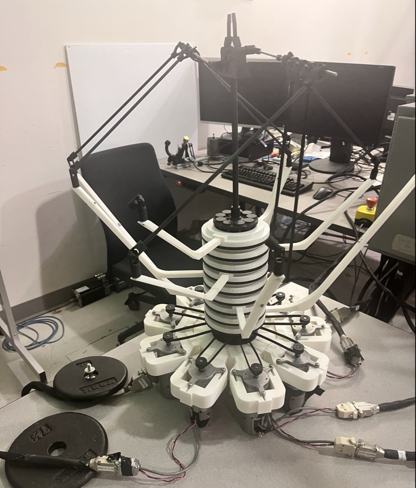
IEEE Robotics and Automation Letters
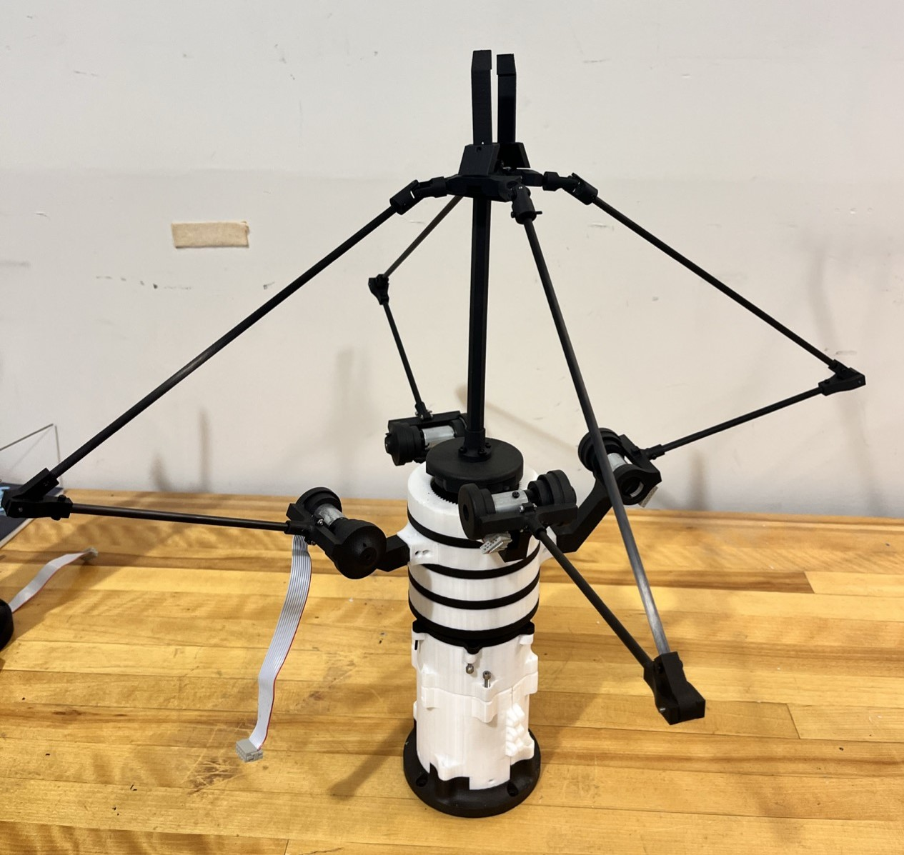
IEEE Robotics and Automation Letters
Procedia Computer Science, Vol. 200, pp. 438–450, 2022
IEEE International Conference on Emerging Smart Computing and Informatics (ESCI), Pune, India, pp. 73–77, 2021
Unlimited rotation with integrated gripper
Singularity-free orientation workspace
Enhanced dexterity through redundancy
Université Laval, Québec
Parallel manipulators with unlimited rotation and grasping. Supervised by Prof. C. Gosselin & Prof. P. Lambert.
Institute of Robotics, Johannes Kepler University Linz
Singularity analysis and graspability indices with Prof. A. Müller. Funded by Mitacs Globalink Research Award.
FEMTO-ST Institute (CNRS UMR 6174), Besançon
Smart Integrated Systems — Robotics and Micro-Robotics. Supervised by Prof. R. Dahmouche.
Hitachi ABB Power Grids R&D, Zürich
Analysis of complex datasets for high-voltage circuit breakers.
Universidad Católica Boliviana, La Paz
Foundation in robotics, control systems, and mechanical design.
Visiting Researcher at JKU Linz (Austria) with Prof. Andreas Müller, funded by Mitacs Globalink
Paper on the (6+1)-DoF parallel robot published in Mechanism and Machine Theory
Paper published in ASME Journal of Mechanisms and Robotics on a compact 4-DOF parallel robot
Awarded Mitacs Globalink Research Award for research visit to Austria
Won 1st Place (Graduate Division) at the ASME Student Mechanisms & Robotics Design Competition (SMRDC), a worldwide competition at IDETC, Anaheim, CA. Received $1,500 USD travel grant and $600 USD cash prize.
Mitacs Globalink Research Award
Research stay at JKU Linz with Prof. A. Müller · 2025
Citoyens du Monde Grant
Gouvernement du Québec
Ph.D. Fellowship
Université Laval · 2023
Screw Theory Summer School Scholarship
TU Delft, Netherlands · 2023
UBFC Master's Scholarship
FEMTO-ST / UBFC, Besançon · 2021
Canada Research Chair
Université Laval
Ph.D. SupervisorAssociate Professor
Université Laval
Ph.D. Co-supervisorFull Professor, Institute of Robotics
Johannes Kepler University Linz
Research CollaboratorAssociate Professor
FEMTO-ST
M.Sc. SupervisorService & Community
Open for Postdoc or R&I positions from December 2026
I am seeking postdoctoral or R&I positions in parallel robotics, mechanism design, and robotic manipulation.
grover.aruquipa-aruquipa.1@ulaval.ca